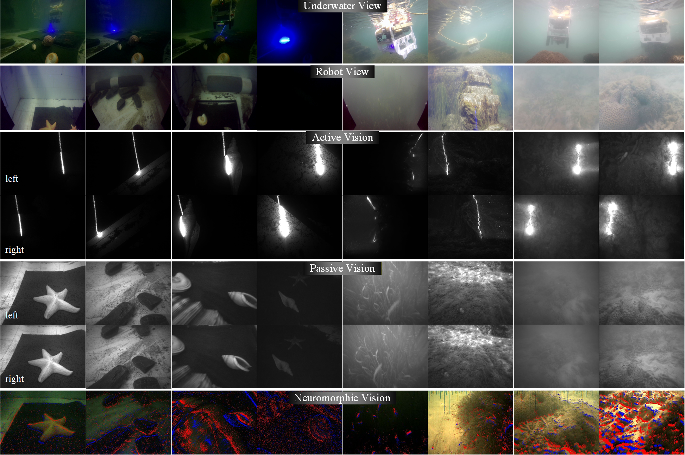

AquaTriV
Underwater Multi-Scene Multi-Modal Dataset
25 sequences · 255GB · 6.9h · 2.8km
Yaming Ou, Xiaoyan Liu, Junfeng Fan, Chao Zhou, Pengjv Zhang, Song Xia, Yuanbo Xue, Bing Wang, Long Cheng
25 sequences · 255GB · 6.9h · 2.8km
Passive, active, neuromorphic vision + IMU, DVL,pressure
Laser-scanned dense point clouds for mappingevaluation
MCS (indoor) +INS-SfM fusion (outdoor)

Model: FindROV H20
Weight: 23 kg
Max Depth: 300 m
Velocity: 2 knot
Cable: 100 m
Model: 3DM-CV5-25
Freq: 100 Hz
R/P: ±0.5°
Yaw: ±1°
Mag: ±2.5 Gauss
Model: A50
Beam: 4-beam
Angle: 22.5°
Freq: 4–26 Hz
Res: 0.1 mm/s
Model: B30
Range: 0–30 bar
Depth: 300 m
Acc: ±200 mbar
Res: 0.2 mbar
View: Front
RGB
Res: 1920×1080
Freq: 30 Hz
FoV: 80°×64°
View: Down
D435i
Res: 640×480
Freq: 30 Hz
FoV: 87°×58°
DAVIS346
Res: 346×260
Time: 1 μs
DR: 120 dB
Freq: 70 Hz
Points: 512
λ: 450 nm
Power: 3 W
Angle: 35°


We provide multi-modal raw sensory data including active vision, passive vision, and neuromorphic vision streams, along with synchronized navigation measurements. Below shows representative visual samples and ROS topic formats.

Examples of visual raw images in the AquaTriV dataset.
| Type | Topic Name | Message Type | Rate (Hz) |
|---|---|---|---|
| Active Vision | /scanner/left_image/compressed | sensor_msgs/CompressedImage | 100 |
| /scanner/right_image/compressed | sensor_msgs/CompressedImage | 100 | |
| Passive Vision | /stereo/infra1/compressed | sensor_msgs/CompressedImage | 30 |
| /stereo/infra2/compressed | sensor_msgs/CompressedImage | 30 | |
| /stereo/monocular/compressed | sensor_msgs/CompressedImage | 30 | |
| /stereo/imu | sensor_msgs/IMU | 200 | |
| Neuromorphic Vision | /dvs/events | dvs_msgs/EventArray | 30 |
| /dvs/image_raw/compressed | sensor_msgs/CompressedImage | 30 | |
| /dvs/event_rendering/compressed | sensor_msgs/CompressedImage | 30 | |
| /dvs/imu | sensor_msgs/IMU | 200 | |
| AHRS | /imu/data | sensor_msgs/Imu | 200 |
| /imu/mag | sensor_msgs/MagneticField | 50 | |
| DVL | /dvl/data | dvl_a50_2/DVL | 12 |
| /dvl/velocity | sensor_msgs/Imu | 12 | |
| /dvl/position | sensor_msgs/Imu | 4 | |
| Pressure | /pressure_sensor/depth | sensor_msgs/FluidPressure | 60 |
| Bonus | /robotview/monocular | sensor_msgs/CompressedImage | 30 |
| /waterview/monocular | sensor_msgs/CompressedImage | 30 |
We evaluate classical and multi-modal visual-inertial SLAM systems including VINS-Fusion, SVIn2, VD-Fusion, and AquaSLAM. These methods represent state-of-the-art pipelines combining stereo vision, IMU, DVL, and event cameras.

Metrics include APE, ARE, RPE, RRE for accuracy, and CRS/TCR for robustness and tracking continuity.
We compare representative dense mapping and neural reconstruction baselines, including DR-Scan, DR-Sweep, DROID-SLAM, and MASt3R-SLAM, covering both geometric and learning-based approaches.

Evaluation metrics include nearest neighbor error (NNE), completeness (COM), accuracy (AC), Chamfer distance (CD), and mesh metric error (MME).
We further evaluate neural rendering quality using modern radiance field methods (e.g., Gaussian Splatting / NeRF variants), demonstrating robustness under turbidity, low visibility, and dynamic lighting conditions.